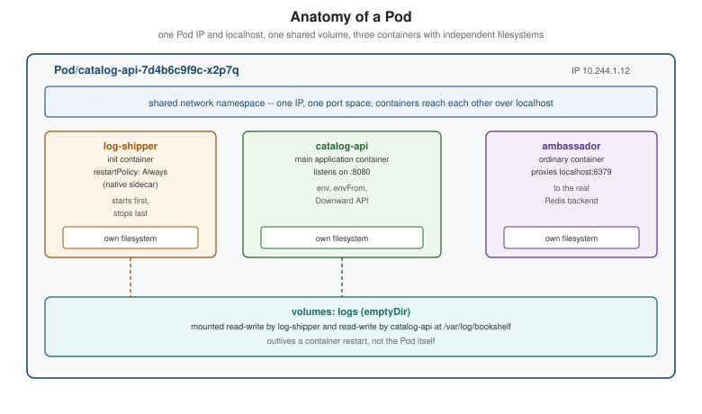

Pods
|
This content was generated with the assistance of AI and should be verified against the official documentation before being relied on in production. |
A Pod is the smallest deployable unit in Kubernetes, and every workload controller covered later in this
section — Deployments, StatefulSets, DaemonSets, Jobs — exists only to create, watch and replace Pods. This page
is written against Kubernetes 1.37 (kubectl 1.37) and opens Guides & References → Backend Development →
Kubernetes's workloads group: Health Probes and Container
Lifecycle, ReplicaSets and Deployments and
Deployment Strategies all assume the vocabulary introduced here.
Everything below builds on the object model from
Objects and the Kubernetes API: a Pod is simply an object whose
kind is Pod.
The Pod as the unit of scheduling
Kubernetes never schedules a bare container. It schedules a Pod — one or more containers that are always placed on the same node, started (and stopped) together, and that share several kernel-level resources for as long as the Pod exists:
-
A network namespace. Every container in a Pod shares one network namespace, so they share one IP address and one port space, and can reach each other over
localhostexactly as two processes on the same machine would. Two containers in the same Pod cannot both bind port 8080; two Pods can, because each Pod gets its own network namespace and its own IP. This is also why a Pod, not a container, is what a Service’s endpoint actually points at (see Services). -
Shared volumes. A
volumesentry declared at the Pod level can be mounted by more than one container in that Pod, each at its own path — the mechanism every multi-container pattern below depends on (see Volumes and Ephemeral Storage for the volume types themselves). Two containers in a Pod can therefore exchange files or a Unix socket without a network hop. -
Shared fate. A Pod’s containers are scheduled together, start together and are torn down together. If the node running a Pod disappears, every container in it disappears with it; there is no "restart only the failed container on another node" — the replacement, if there is one, is a brand-new Pod, created by a controller.
-
IPC and UTS namespaces are shared the same way as the network namespace by default, so containers in a Pod can also communicate via System V IPC or POSIX message queues, and see the same hostname.
This bundle is often summarised as a "logical host": from inside any container in a Pod, the rest of the Pod
looks like other processes on the same machine, reachable over localhost and the local filesystem, in the same
way the sampler’s Book 1 introduces Pods as co-scheduled containers with a shared IP and shared fate. The
practical rule that falls out of it is one (logically) independent process per container: a container should own
one job, so the kubelet’s container-level restart, resource limits and logs stay meaningful; a Pod groups several
such single-purpose containers only when they genuinely need that shared network and filesystem, not as a
packaging convenience for otherwise-unrelated processes.
Why bare Pods are not durable
A Pod created directly (kubectl run with no controller, or a bare kind: Pod manifest apply`d) is, deliberately,
not durable: if its node fails, if it is evicted for resource pressure, or if a human deletes it, nothing recreates
it. There is no live migration of a running Pod to another node — a Pod that must move is deleted on the old node
and a new one (a new name, a new IP, a new UID) is created on a new one. This is exactly the "Pods are fragile,
short-lived" starting point Book 1 ch. 2 spends most of its space on, and it is also why the same book immediately
reaches for externalising state: rather than trusting a Pod’s own filesystem to survive, an application keeps
anything that must outlive a single Pod in a store built for that — Redis or Memcached for a cache, Cassandra (or,
in this section’s Bookshelf scenario, PostgreSQL and Redis) for data that must survive a Pod restart. In current
Kubernetes that same idea is formalised as a spectrum: `emptyDir survives container restarts but not Pod deletion,
a PersistentVolumeClaim survives Pod deletion but is still just as replaceable as the Pod that mounts it, and a
StatefulSet gives a replacement Pod the same stable identity and the same volume, rather than making it durable
in place (see Volumes and Ephemeral Storage,
Persistent Volumes and Storage Classes and
StatefulSets). In every case the answer to "what happens when this Pod
dies" is: a controller creates a different Pod, not that the same Pod is repaired or moved. Almost every
Bookshelf manifest in this section is therefore wrapped in a controller (a Deployment, a StatefulSet, a Job) — see ReplicaSets and Deployments for how a Deployment
supplies exactly that layer over a bare Pod template. Source:
Kubernetes Docs — Pods.
apiVersion: v1
kind: Pod
metadata:
name: catalog-api-debug
namespace: bookshelf
labels:
app.kubernetes.io/name: catalog-api
app.kubernetes.io/component: api
spec:
containers:
- name: catalog-api
image: ghcr.io/example/bookshelf-catalog-api:1.0.0
ports:
- containerPort: 8080Source: Kubernetes Docs — Pods. A Pod this bare is useful only
for a one-off debugging session (kubectl run catalog-api-debug --image=… --restart=Never); every long-running
Bookshelf component is created through a Deployment or StatefulSet instead.
Lifecycle: phases, conditions, container states and restartPolicy
Pod phases
status.phase is a coarse, one-word summary of where a Pod is in its life, and only ever moves forward:
| Phase | Meaning |
|---|---|
|
Accepted by the API server, but not every container is set up and ready yet — this includes the time spent waiting to be scheduled and the time spent pulling images. |
|
Bound to a node, all containers created, and at least one is running, starting or restarting. |
|
Every container terminated in success (exit code |
|
Every container terminated, and at least one terminated in failure. |
|
The Pod’s state could not be obtained, typically because the API server lost contact with the Pod’s node. |
Pending and Running cover every long-lived Pod; Succeeded and Failed are terminal and are what
Jobs and CronJobs actually watches for. CrashLoopBackOff and
Terminating, which kubectl get pods prints in its STATUS column, are not phases — they are a
kubectl display convenience layered on top of a container state and a deletion timestamp, respectively; the phase
underneath a CrashLoopBackOff-displaying Pod is still Running (or Pending, before the first successful start).
Source: Kubernetes Docs — Pod Lifecycle.
Pod conditions
status.conditions is a finer-grained array the kubelet and scheduler maintain alongside the phase, each entry
with a type, a status (True/False/Unknown), lastTransitionTime and a machine-readable reason:
| Condition | Set once… |
|---|---|
|
the Pod has been bound to a node. |
|
the Pod’s sandbox exists: network namespace created, volumes mounted, any requested dynamic resources allocated. |
|
every init container (below) has completed successfully. |
|
every container in the Pod reports ready (see Health Probes and Container Lifecycle). |
|
the Pod as a whole should receive traffic from matching Services — |
|
the Pod is about to be terminated by a disruption (preemption, eviction or garbage collection). |
kubectl get pods and kubectl describe pod both read this array; kubectl wait --for=condition=Ready is the
scriptable way to block on it. Source:
Kubernetes Docs — Pod Lifecycle:
Pod conditions.
Container states and restartPolicy
Independently of the Pod-level phase, each container has its own state (surfaced under
status.containerStatuses[].state): Waiting (not yet running — pulling its image, or waiting on a previous
container state; reason holds strings such as ImagePullBackOff or CrashLoopBackOff), Running, or
Terminated (with an exitCode and, if it crashed, a reason such as OOMKilled).
spec.restartPolicy (a Pod-level field, applying to every ordinary container in the Pod) decides what happens next
after a container terminates:
restartPolicy |
Behaviour |
|---|---|
|
Restart on any termination, success or failure. What every Deployment- and StatefulSet-managed Pod uses, because those controllers expect their Pods to run forever. |
|
Restart only on a non-zero exit code; a container that exits |
|
Never restart a terminated container; a failed container is left |
A restarted container backs off exponentially (10s, 20s, 40s, … capped, by default, at five minutes) so a
container that fails immediately does not spin the node’s CPU and API server with restart attempts;
kubectl describe pod shows this as CrashLoopBackOff while the container waits out its backoff window. Source:
Kubernetes Docs — Pod Lifecycle:
restart policy.
Inside the Running phase, each container moves through its own states, which is where a crash loop shows up
while the Pod phase stays Running:
Source: Kubernetes Docs — Pod Lifecycle.
Init containers, native sidecars, multi-container patterns, ephemeral containers and static Pods
Init containers
spec.initContainers is a separate, ordered list of containers that run to completion, one after another, before
any of spec.containers starts. Each must exit 0 before the next begins; if one fails, the kubelet retries it
according to restartPolicy (the Pod stays Pending throughout). They exist for setup that the application
container itself should not have to know how to do: waiting for a dependency to become reachable, running a
one-shot migration, or — the pattern Book 2 ch. 5’s Redis example uses — writing generated configuration files
into a shared emptyDir volume that the main container then mounts read-only.
spec:
initContainers:
- name: wait-for-postgres
image: ghcr.io/example/bookshelf-toolbox:1.0.0
command: ["sh", "-c", "until nc -z postgres-0.postgres.bookshelf.svc.cluster.local 5432; do sleep 2; done"]
containers:
- name: catalog-api
image: ghcr.io/example/bookshelf-catalog-api:1.0.0Source: Kubernetes Docs — Init Containers.
Native sidecar containers
An init container can also be marked restartPolicy: Always, which turns it into a native sidecar: it still
starts (and must reach a running state) before the main containers, but it is not required to exit before they
start, and the kubelet keeps it running and restarts it independently for the Pod’s whole lifetime — and, on
shutdown, stops it after every main container has terminated, so it stays available to the very end (for example
to flush logs or proxy a final health check). This feature graduated to stable in Kubernetes 1.33 (it was first
available, behind a feature gate, in 1.28), and is now the recommended way to run a log shipper, a service-mesh
proxy or a metrics exporter alongside an application container, without the ordering problems an ordinary
spec.containers entry used to have (a sidecar in spec.containers starts in no guaranteed order relative to the
app container, and readiness probes on the whole Pod could pass before the sidecar was actually ready).
spec:
initContainers:
- name: log-shipper
image: ghcr.io/example/bookshelf-log-shipper:1.0.0
restartPolicy: Always # marks this init container as a native sidecar
volumeMounts:
- name: logs
mountPath: /var/log/bookshelf
containers:
- name: catalog-api
image: ghcr.io/example/bookshelf-catalog-api:1.0.0
volumeMounts:
- name: logs
mountPath: /var/log/bookshelf
volumes:
- name: logs
emptyDir: {}Source: Kubernetes Docs — Sidecar Containers.
Multi-container patterns
Native sidecars formalise a scheduling guarantee; the pattern a sidecar container implements is still one of a few well-known shapes, all built from the same "extra container sharing this Pod’s network and volumes" primitive:
| Pattern | What the extra container does |
|---|---|
Sidecar |
Adds a cross-cutting capability to the main container without changing its image — a log shipper (above), a service-mesh proxy (see Cluster Networking, CNI and Service Mesh), or a certificate refresher writing into a shared volume. |
Ambassador |
Proxies the main container’s outbound (or inbound) network traffic through |
Adapter |
Normalises the main container’s output for a consumer that expects a different shape — for example, rewriting an application’s own log or metrics format into the shape a cluster-wide collector expects, so the application itself stays unaware of that collector. |
Ephemeral containers
spec.ephemeralContainers is a fourth container list, added to an already-running Pod via the pods/ephemeralcontainers
subresource rather than at creation time, purely for interactive troubleshooting: it has no ports, no probes, no
resource guarantees, and (unlike a native sidecar) is never restarted. kubectl debug is the everyday interface to
it — see Debugging and Troubleshooting for the full
command set, including attaching a debug container to a minimal distroless image that ships no shell of its own.
Source: Kubernetes Docs — Ephemeral
Containers.
Static Pods
A static Pod is a Pod the kubelet manages directly from a manifest file on its own node’s filesystem (by
default /etc/kubernetes/manifests), completely bypassing the API server and the scheduler: the kubelet watches
that directory and starts, restarts or removes Pods as files appear, change or disappear, with no controller and no
kubectl apply involved. The kubelet still mirrors each one onto the API server as a read-only mirror Pod so it
shows up in kubectl get pods, but kubectl delete on that mirror Pod only removes the mirror — the kubelet
recreates it immediately, because the real source of truth is still the file on disk. Static Pods are how kubeadm
itself runs kube-apiserver, etcd, kube-scheduler and kube-controller-manager as ordinary Pods on the control
plane’s own nodes, without needing a running control plane to bootstrap the control plane (see
Cluster Setup and Administration); outside that
bootstrapping role, application workloads should use a Deployment or DaemonSet instead, since a static Pod has none
of a controller’s rescheduling, rolling-update or multi-node consistency guarantees. Source:
Kubernetes Docs — Static Pods.
Environment variables, envFrom, the Downward API, hostAliases and image pulling
Environment variables and envFrom
Each container’s env list sets variables directly (value) or from another object’s field (valueFrom),
without the application ever reading Kubernetes objects itself — the mechanism Book 1 ch. 3 already relies on for
service discovery before cluster DNS existed, and still the simplest way to hand a container one or two values:
valueFrom kind |
Reads |
|---|---|
|
One key from a ConfigMap (see ConfigMaps). |
|
One key from a Secret (see Secrets). |
|
One field of the Pod’s own spec/metadata — the Downward API, below. |
|
A container’s own resource request or limit, e.g. |
envFrom injects every key of a ConfigMap or Secret at once, each key becoming an env-var name (optionally
prefixed), which is the pattern to reach for once a container needs more than a couple of individually-named
values:
spec:
containers:
- name: catalog-api
image: ghcr.io/example/bookshelf-catalog-api:1.0.0
envFrom:
- configMapRef:
name: catalog-api-config
- secretRef:
name: catalog-api-secrets
env:
- name: POD_NAME
valueFrom:
fieldRef:
fieldPath: metadata.nameThe Downward API
The Downward API is the general form of fieldRef/resourceFieldRef: a way to expose a Pod’s own metadata and a
container’s own resource limits to itself, either as environment variables (above) or as files in a mounted
downwardAPI volume, without the container ever calling back into the API server. Typical fields: metadata.name,
metadata.namespace, metadata.uid, metadata.labels, metadata.annotations, spec.nodeName, status.podIP,
status.hostIP, and limits.cpu / requests.memory per container. The volume form is the only way to expose
labels and annotations (their keys can contain characters an env-var name cannot), and it updates the mounted files
automatically if labels or annotations change on a running Pod, unlike a configMapKeyRef env var which is fixed
at container start.
spec:
containers:
- name: catalog-api
image: ghcr.io/example/bookshelf-catalog-api:1.0.0
volumeMounts:
- name: pod-info
mountPath: /etc/podinfo
readOnly: true
volumes:
- name: pod-info
downwardAPI:
items:
- path: labels
fieldRef:
fieldPath: metadata.labels
- path: cpu_limit
resourceFieldRef:
containerName: catalog-api
resource: limits.cpuSource: Kubernetes Docs — Downward API.
Hostname, subdomain and hostAliases
A Pod’s own hostname defaults to metadata.name (overridable via spec.hostname), and setting spec.subdomain
together with a headless Service of the same name gives it a stable, resolvable DNS name of its own — the exact
mechanism StatefulSets builds per-Pod DNS on top of. Separately,
spec.hostAliases adds fixed entries to the Pod’s /etc/hosts, useful for pointing at a host that has no DNS entry
yet (or overriding one) without touching cluster DNS:
spec:
hostAliases:
- ip: "203.0.113.10"
hostnames:
- "legacy-inventory.internal"
containers:
- name: catalog-api
image: ghcr.io/example/bookshelf-catalog-api:1.0.0imagePullPolicy and imagePullSecrets
Every container’s image is subject to imagePullPolicy, which decides whether the kubelet trusts a locally
cached image or asks the runtime to pull again — the Kubernetes-side counterpart of the tag and registry choices
Registries and Docker Hub covers on the build side:
imagePullPolicy |
Behaviour |
|---|---|
|
Pull before every start, even if an image with that exact tag is already cached on the node — the default when
the tag is |
|
Pull only if the image is not already present on the node — the default for any other explicit tag, and the right choice for the immutable, versioned tags this section’s Bookshelf manifests use throughout. |
|
Never pull; fail if the image is not already present locally. Used mainly for images built and loaded straight
into a local cluster, e.g. |
imagePullSecrets names one or more kubernetes.io/dockerconfigjson Secrets (created with
kubectl create secret docker-registry) the kubelet presents when pulling from a private registry — the
Kubernetes-side equivalent of docker login running once on every node instead of once on a developer’s machine:
kubectl create secret docker-registry ghcr-pull \
--docker-server=ghcr.io \
--docker-username=bookshelf-bot \
--docker-password="$(cat ghcr-pull-token.txt)"spec:
imagePullSecrets:
- name: ghcr-pull
containers:
- name: catalog-api
image: ghcr.io/example/bookshelf-catalog-api:1.0.0
imagePullPolicy: IfNotPresentA Deployment’s every Pod needs the same imagePullSecrets entry (or the cluster-wide default set on the
namespace’s default ServiceAccount), so a private-registry pull failure shows up as ImagePullBackOff on new Pods
rather than as a build-time error. Source:
Kubernetes Docs — Pull an
Image from a Private Registry and
Kubernetes Docs — Images.
A Pod’s anatomy
[pod-anatomy] puts the sections above together: a native-sidecar init container and two ordinary containers, all
inside one Pod, sharing its one network namespace (and therefore one IP and localhost) and a volume mounted by
more than one of them.
